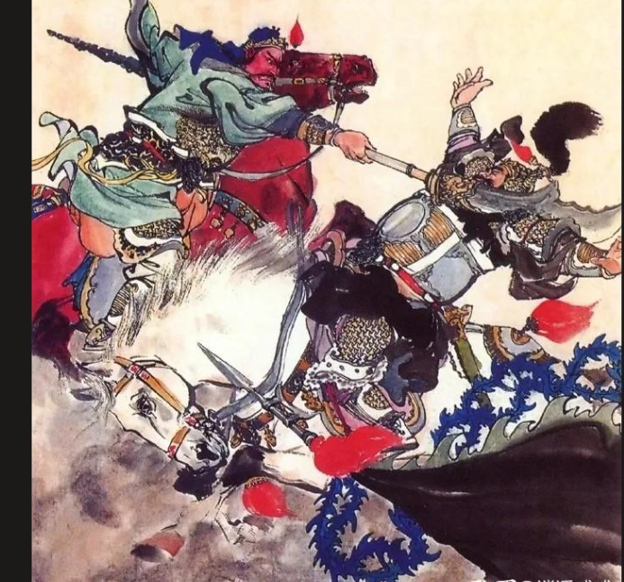
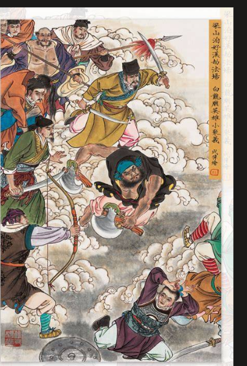
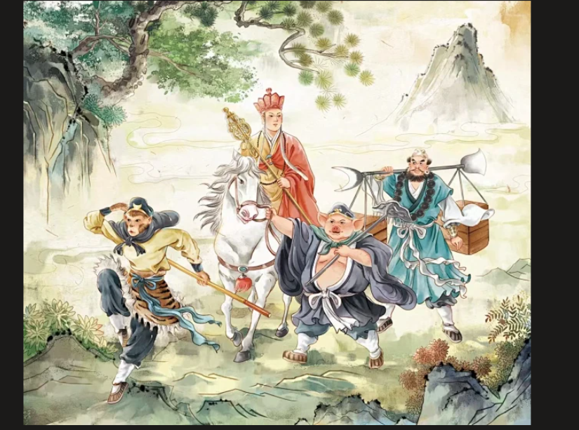

作者：罗贯中
《三国演义》是中国古典四大名著之一，全名为《三国志通俗演义》。小说以东汉末年与三国时代的历史为背景，描写了魏、蜀、吴三国之间的政治和军事斗争，塑造了曹操、刘备、诸葛亮、关羽等众多栩栩如生的人物形象。

作者：施耐庵
《水浒传》是中国古典四大名著之一，又名《忠义水浒传》。小说描写了北宋末年以宋江为首的一百零八位好汉在梁山泊聚义的故事，歌颂了起义英雄的反抗精神和忠义品格。

作者：吴承恩
《西游记》是中国古典四大名著之一，作者吴承恩（1501—1582），字汝忠，号射阳山人，明代小说家。小说描写了唐僧师徒四人西天取经、历经九九八十一难的故事，塑造了孙悟空、猪八戒、沙僧等经典形象，充满了浪漫主义的幻想色彩。
作者：曹雪芹
《红楼梦》是中国古典四大名著之一，原名《石头记》。小说以贾、史、王、薛四大家族的兴衰为背景，以贾宝玉与林黛玉、薛宝钗的爱情悲剧为主线，全面展现了封建社会的生活，是中国古典小说的巅峰之作。